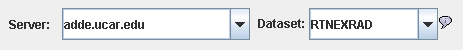

McIDAS-V User's Guide > Getting Started
McIDAS-V User's Guide > Getting Started

An Animation Loop of NWS WSR-88D Level III Radar Imagery
This section describes how to make a display using Level III radar data.
The steps include:
Choosing Radar Image Data from a Remote Server
In the Data Explorer select the Data Sources tab.
From here select the the Radar Imagery->Level III source
to view the Level
III radar chooser. For
more information about the Level III radar chooser, see Choosing
NEXRAD Level III Radar Data.

- Choose an ADDE and a to
use:
|  |
Try Server: adde.ucar.edu and Dataset: RTNEXRAD. |
- Press to query the server for available
radars types:
- The map shows the available radar station locations and IDs. Select one
by clicking on it.
 |
| The Declutter check box allows you to show all stations
(not checked), or only a limited number of stations that do not overlap
each other (checked). You will need to zoom in to see all the stations
without overlaps. |
- For the Radar Data Type of data from this radar, select a radar
product, such as Base Reflectivity Tilt 1, from the pull-down menu.
Once a station and a radar type has been selected the ADDE server will be
queried as to the available times. Optionally, you can override the default
data type that is returned.
- Either, choose a relative set of times steps (e.g., Last 5 times):
- Or, choose a set of absolute times:
 |
| When choosing absolute times for the first time McIDAS-V needs
to query the ADDE server for the times. This may take some time.
To select more than one time use Control-Click or Shift-Click. |
- When done, load the selected radar data with the button.
 |
If the button is selected
then a radar display will automatically be created |
Selecting the Radar Display to be made
The radar data source that you selected will be shown in the Field Selector tab.
If you checked off the button or if
you want to create another radar display click "Base Reflectivity," or the
selected product in the Fields panel and click on "Image display" in
the Displays panel.
Make the display by clicking on Create Display.
You can add Radar Range Rings with the Display->Add Range Rings menu
item. To control time animation use the Time Animation Widget.
McIDAS-V User's Guide > Getting Started